Wedding Party
Braidsmaid
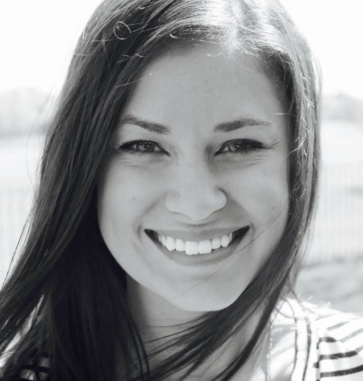 Rachel (Matron of Honor) Best friend since middle school. Rachel has always been such an inspiration to Vannessa. Rachel is not only a Drake lover but also an Over-achiever and go getter.
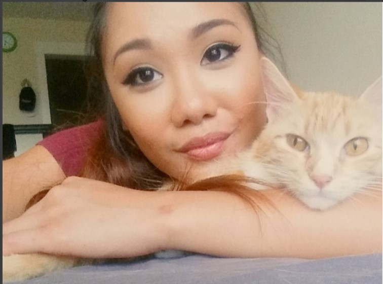 Monique (Maid of Honor) Introduced Vannessa and Jorge as a hostess at a previous restaurant. She might be pint-sized, but this little one has a big spirit that is so fun loving and can talk to anyone.
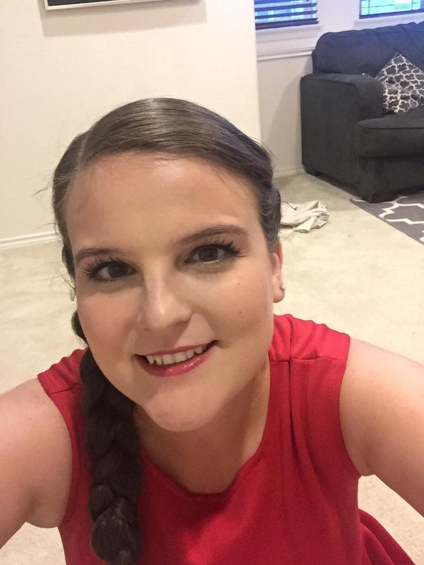 Emily Emily and Vannessa have known each other since middle school. Emily is a psych major and huge cat lover. Growing up, Emily was Vannessa’s most independent friend and was always admired for that. Oh yeah, Emily has an awesome grandma.
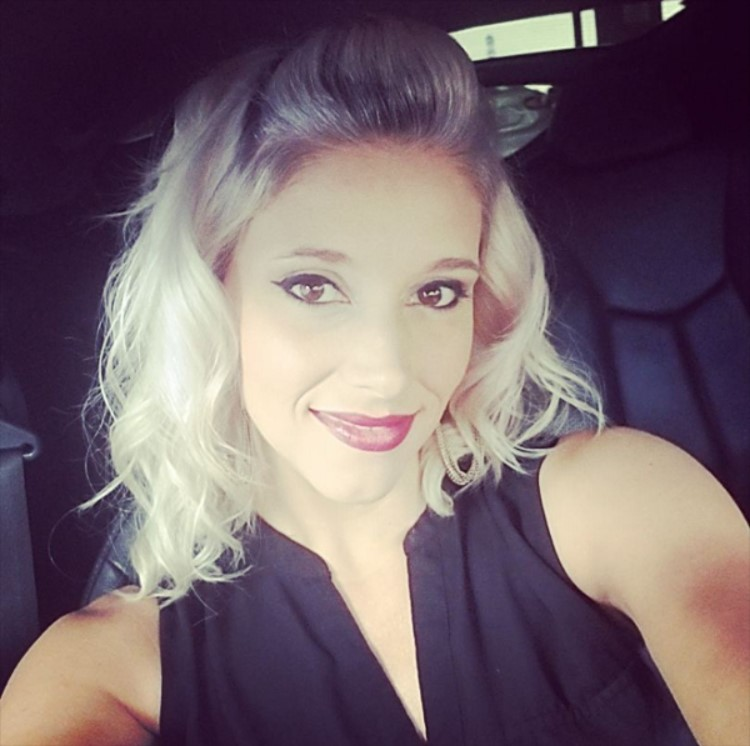 Deeana Cobartender that is as fast as lightning. Dee has a heart of gold. She is a talented cake maker and loving mother to her nieces and nephews.
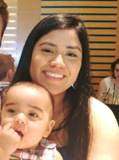 Cristina Cobartender, mother of Renly and girlfriend to Jarrod . Cristina is spunky, and animated. She loves to dance and is the life of the party.
Nicole Sister-in-law and mother to Olivia. Nicole is a Texas Tech graduate and loves the Spurs. She also loves teaching and being an example to young minds.
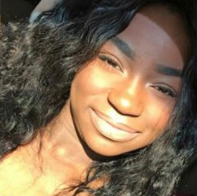 Edaline Edaline is always going to be the baby of the family even though she is growing too fast. She is Vannessa’s brilliant little sister. She is reserved in nature but has loud accomplishments.
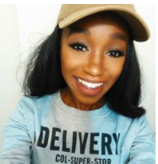 Yorlynn Vannessa’s younger sister and woman of many talents. Yorlynn loves all art, science and teaching. The trick to Yorlynn is you can’t take everything she says to seriously. She is an amazing photographer and she took Vannessa and Jorge’s engagement pictures.
Groomsmen
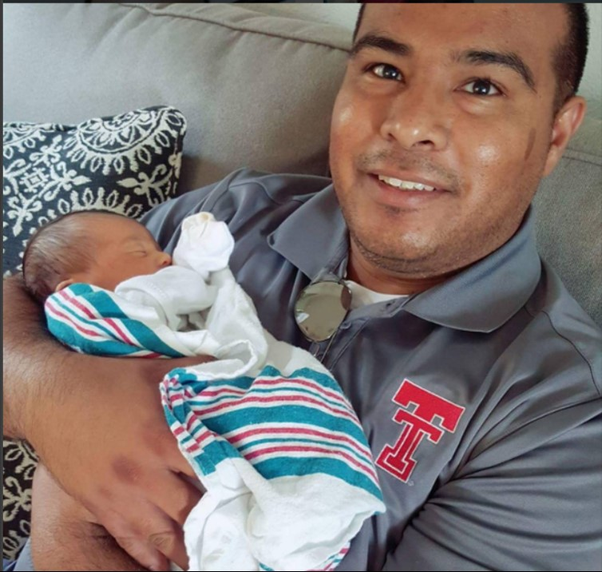 David Avid master griller. The oldest of the three Juarez boys. David is the life of the party and goes by “Davo”. Davo loves to watch sports and is--of course--a big Texas Tech fan.
Enrique The twin to Davo and father of Olivia. Enrique goes by Henry. He is a big joker and loves technology and all things computer
 Issac
Jorge has known Isaac since the 5th grade. Isaac is a big Cowboys and Texas Rangers fan. Isaac does not take “No” for an answer and he is persistent in achieving his goals.
Issac
Jorge has known Isaac since the 5th grade. Isaac is a big Cowboys and Texas Rangers fan. Isaac does not take “No” for an answer and he is persistent in achieving his goals.
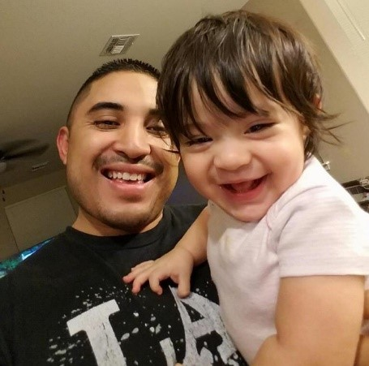 Albert Albert and Jorge met in the 5th grade as they used to play basketball at Albert’s grandma’s house. Albert is a great father of 3 and a number one Dallas Cowboys fan.
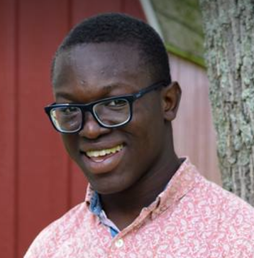 Nick Nick is the only male of the Engmann children and a legacy at the University of Texas at Austin. He is the first person Jorge asked permission to marry Vannessa
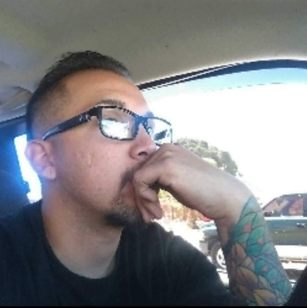 Roy Roy is the first man to come up with a plan. Jorge and Roy have known each other since the 5th grade. Roy is a great father of 2.
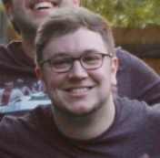 Cody Proud founder of Coco-thon. Amazing husband of Rachel and great dog dad. Cody is best known for his humorous one-liners, his gaming skills and his computer skills.
Jarrod Co-bartender to Vannessa. Jarrod is a big arsenal fan and is training to be a pilot. Father of Renly and boyfriend to Cristina..